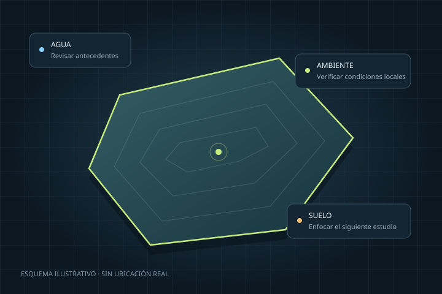

Quiero analizarlo
Conoce sus condiciones y prepara las verificaciones que necesita tu proyecto.
Elegir un análisis →Encuentra u ofrece un terreno en arriendo. Comprende sus condiciones antes de invertir en visitas y estudios.
Análisis inicial · Recomendaciones para avanzar

Propietarios, empresas y conocimiento del terreno en un mismo recorrido.
Conoce sus condiciones y prepara las verificaciones que necesita tu proyecto.
Elegir un análisis →Registra tu búsqueda para explorar opciones de arriendo acordes con tu necesidad.
Registra tu interés en arrendarlo y conectar con empresas que buscan dónde desarrollar sus proyectos.
La conexión entre propietarios y empresas comienza con el registro. Aún no hay un catálogo público de anuncios.
El alcance del análisis depende de la información disponible para tu terreno.
Llega a la visita sabiendo qué preguntar.
Descubre lo que una sola visita no muestra.
Referencias para un predio de hasta 10 ha. Antes de contratar se confirman cobertura, alcance, precio final e impuestos. El cobro en línea aún no está habilitado.
El dron y los estudios especializados se cotizan aparte. Sus resultados complementan la ficha inicial para revisar nuevas preguntas sobre el terreno.
El ejemplo explica hallazgos de agua, ambiente y suelo, y muestra cómo profundizar con un levantamiento. Cada resultado distingue qué sabemos y qué falta comprobar.
Un vistazo inicial no es un avalúo, un permiso, un diseño de obra ni una garantía de viabilidad.Con tu permiso medimos visitas y clics para saber si esta propuesta te sirve. Puedes seguir navegando y registrarte aunque rechaces.